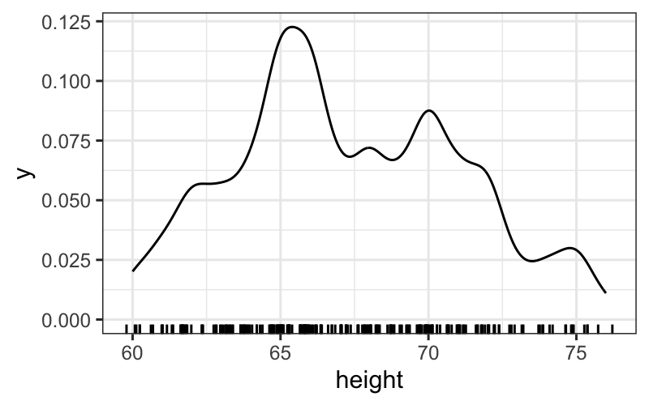
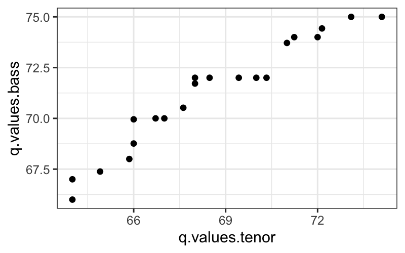

## we need to tell it not just that we want to plot height, but how to plot it. here we're saying to plot height as an ecdf
ggplot(singer, aes(x = height)) + stat_ecdf()
Julia Fukuyama
Goals:
Even if you have multivariate data, you should start out looking at the variables one by one, as if they were univariate.
Empirical CDF definition:
Let \(x_1, \ldots, x_n\) be our dataset.
The empirical cumulative distribution function (ecdf) is defined as \[ \text{ecdf}(x) = \frac{\text{\# of elements in the dataset with value } \le x}{\text{\# of elements in the dataset}} \]
Properties:
Let’s try this out in R
## lattice has the singer data that we're going to use
library(lattice)
library(ggplot2)
library(dplyr)
library(magrittr)
library(stringr)Let’s try out ggplot
## we need to tell it not just that we want to plot height, but how to plot it. here we're saying to plot height as an ecdf
ggplot(singer, aes(x = height)) + stat_ecdf()
Let \(X\) be a random variable obtained by drawing uniformly at random from the dataset \(x_1, \ldots, x_n\).
\[ \text{ecdf}(x) = P(X \le x) \]
Why is the ECDF a good representation of the data?
Remember from your other statistics courses the definition of a cumulative distribution function:
Let \(X\) be a random variable taking values in \(\mathbb R\), the cumulative distribution function \(F_X\) is defined as \[ F_X(x) = P(X \le x) \]
The empirical CDF is the analogous quantity for our data, and is the nonparametric maximum likelihood estimate of the population CDF.
Histogram: Definition
Let \(x_{(1)}, \ldots, x_{(n)}\) be the ordered data.
## `stat_bin()` using `bins = 30`. Pick better value with `binwidth`.ggplot(singer, aes(x = height)) +
geom_density(adjust = .5) +
geom_rug(aes(y = 0), sides = "b",
position = position_jitter(height = 0))
Exercise: play around with the jittering on the rug and the adjust parameter in the density. What do you like best? Again, try faceting out the histograms or plotting them over one another. Do different versions bring out different features of the data? What do you notice in the different plots?
set.seed(0)
df = data.frame(x = c(rnorm(25, 0, 1), rnorm(25, 5, 1)))
ggplot(df) + geom_histogram(aes(x = x))## `stat_bin()` using `bins = 30`. Pick better value with `binwidth`.Drawbacks of histograms:
Goal: Compare two univariate samples to each other.
Before doing that, we need to define the quantile function.
The \(f\) quantile, \(q(f)\), of a set of data is a value with the property that approximately a fraction \(f\) of the data are less than or equal to \(q(f)\).
Note: This definition doesn’t completely specify the quantile function.
For concreteness, we use Cleveland’s definition of the quantile function:
Now we have a partial specification of a quantile function.
Create the remainder by linear interpolation of the points we do have.
There isn’t a nice R function for making quantile plots using Cleveland’s definition, but we can still work it out by hand.
## quantile plots by hand
Tenor1 = singer %>%
subset(voice.part == "Tenor 1") %>%
arrange(height)
## exactly the same as
Tenor1 = arrange(
subset(singer, voice.part == "Tenor 1"), height)
## close to the same as
sort(singer$height[singer$voice.part == "Tenor 1"])## [1] 64 64 65 66 66 66 67 67 68 68 68 69 70 70 71 71 72 72 73 74 76You can also use the quantile function:
Suppose we have two sets of univariate measurements, \(x_{(1)}, \ldots, x_{(n)}\) and \(y_{(1)}, \ldots, y_{(m)}\), with \(m \le n\).
For each \(i = 1,\ldots, m\), plot the \((i - .5) / m\) quantile of the \(y\) dataset against the \((i - .5) / m\) quantile of the \(x\) dataset.
Note:
If \(m = n\), then
I will show three ways to make a QQ plot for two samples.
The simplest way is to use the qqplot function:
Tenor1 = singer %>% subset(voice.part == "Tenor 1")
Bass2 = singer %>% subset(voice.part == "Bass 2")
qqplot(Tenor1$height, Bass2$height)
If you really want all your plots to be in ggplot, you can ask the
qqplotfunction to return a data frame that you can plot
with ggplot.
qq.df = as.data.frame(qqplot(Tenor1$height, Bass2$height,
plot.it = FALSE))
ggplot(qq.df, aes(x = x, y = y)) +
geom_point() +
xlab("Tenor 1") + ylab("Bass 2")
If you want to do it more “by hand,” you can use the
quantile function to get the quantiles of both
distributions and plot them against each other.
The quantile function seems to handle ties a bit
differently than the qqplot function, but this should give
quite similar results.
f.values = (0:(nrow(Tenor1) - 1)) / nrow(Tenor1)
q.values.tenor = quantile(Tenor1$height, probs = f.values)
q.values.bass = quantile(Bass2$height, probs = f.values)
ggplot(data.frame(q.values.tenor, q.values.bass)) + geom_point(aes(x = q.values.tenor, y = q.values.bass))
Tenor1_or_Bass2 = singer %>% subset(voice.part %in% c("Tenor 1", "Bass 2"))
ggplot(Tenor1_or_Bass2) +
geom_histogram(aes(x = height, fill = voice.part),
alpha = .5, position = "dodge")## `stat_bin()` using `bins = 30`. Pick better value with `binwidth`.Goal: Check how well a normal distribution approximates the data
Definition: Theoretical quantiles
Let \[ q_{\mu, \sigma}(f) = \{ x : P(\mathcal N(\mu, \sigma^2) \le x = f) \} \]
In words: the value \(x\) such that the probability that a \(\mathcal N(\mu, \sigma^2)\) random variable takes value at most \(x\) is equal to \(f\).
Note the analogy to data quantiles, \(q_x(f)\) defined before.
Let \(x_{(1)}, \ldots, x_{(n)}\) be our ordered data.
Recall that we defined the sample quantile function at values \(f_i = (i - .5) / n\) as \(q_x(f_i) = x_{(i)}\).
For each value \(f_i\), \(i = 1,\ldots, n\), compute
A Q-normal plot shows sample quantiles on the \(y\)-axis and theoretical quantiles on the \(x\)-axis.
Properties:
Let’s first see what a Q-normal plot looks like when the data really come from a normal distribution.
ggplot(data.frame(x = rnorm(100))) +
stat_qq(aes(sample = x)) +
geom_abline(aes(slope = 1, intercept = 0))
Then we have a reference for how closely to the line the points should lie when we’re looking at real data.
To visualize one distribution:
To compare two distributions:
To compare a distribution to a theoretical distribution: